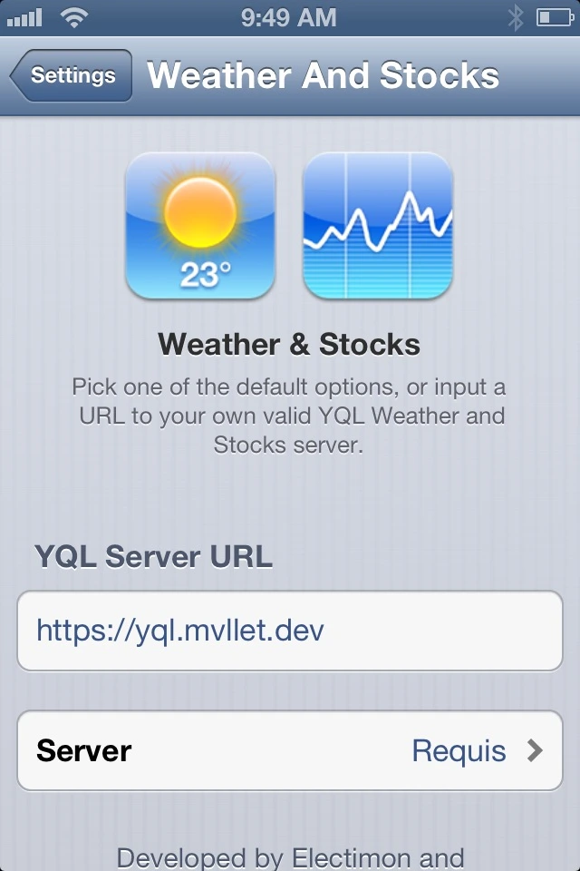
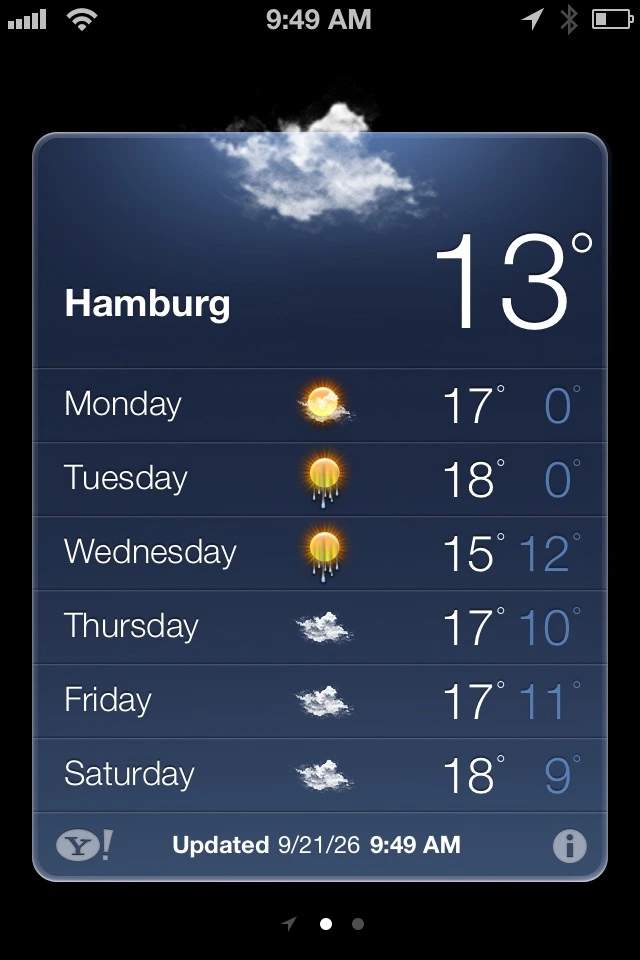

I'm a 17-year-old student and developer from Germany. I've been building for the web since I was 10-years-old. Over the past two years, I expanded into native iOS and macOS apps with Swift and backend systems with Rust.

A real-time, browser- or terminal-based departure monitor and route planner for Hamburg's public transport system.

A native macOS app for verifying file integrity using the xxHash64, SHA-256, and BLAKE3 algorithms. Built with SwiftUI and Rust.
I also love jailbreaking. I downgraded my black iPhone 4 to iOS 6.1.3, which sparked my interest in Cydia tweaks and reviving older iOS versions.
I’d like to give a few shoutouts. A huge thanks to Preloading for the MapsX and TubeReplacer tweaks, Requis and Electimon for the Weather & Stocks (WeatherX) tweak, and Victor Lobe for Veteris's revival as well as the only App Store fix that actually worked for me on iOS 6!
Recently, I ran into issues with the Weather & Stocks tweak caused by an overload on Requis' YQL server (view source code) after Electimons' server went down. To fix this, I recreated and simplified the server for myself using Claude, which worked surprisingly well. If you want to try it out, follow the tutorial below.
- Open Settings > Weather And Stocks.
- Tap the Server URL field and enter
- That's it. The selected default server does not matter.

